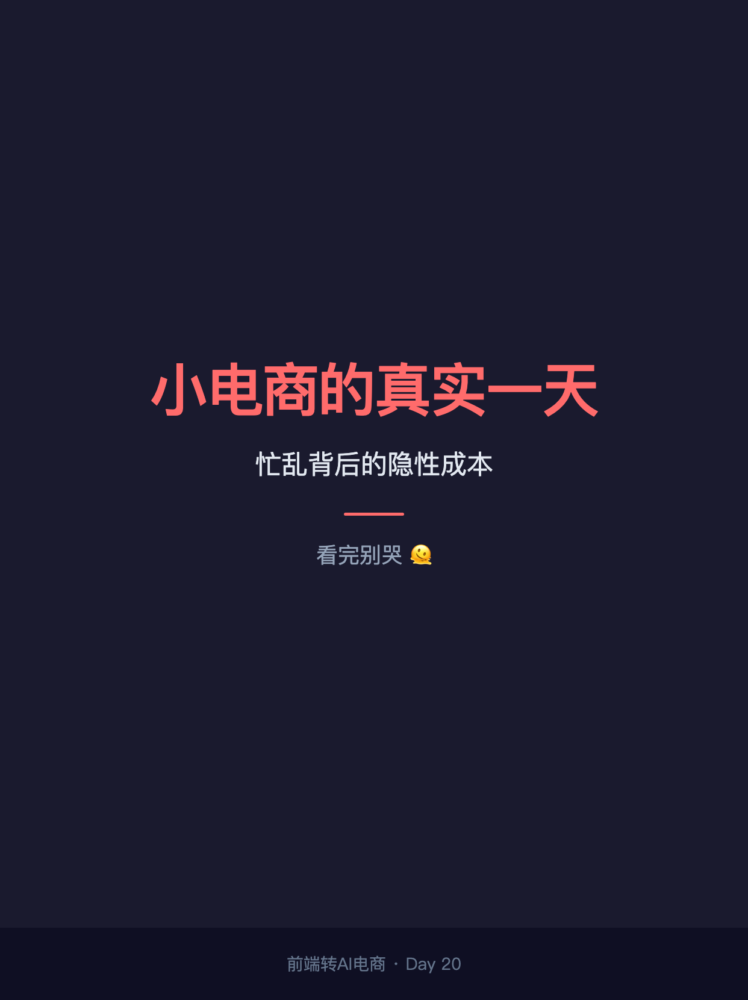
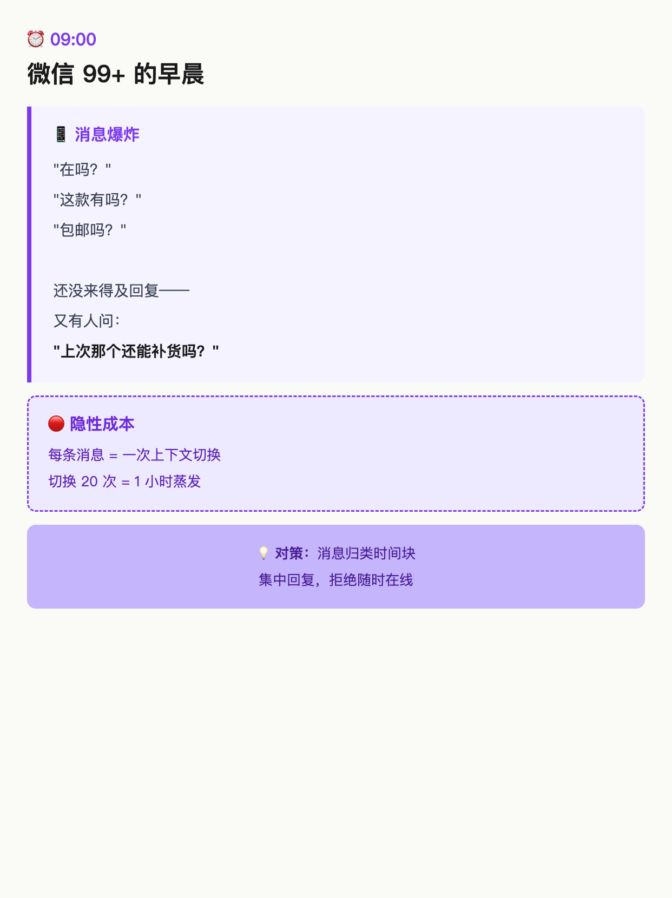
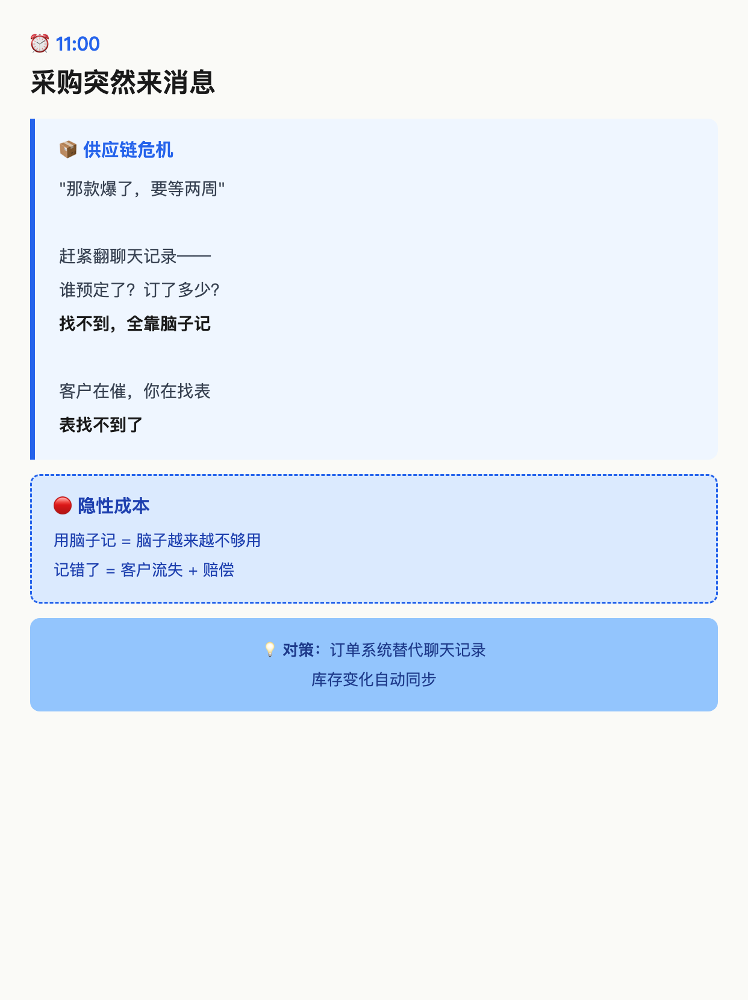
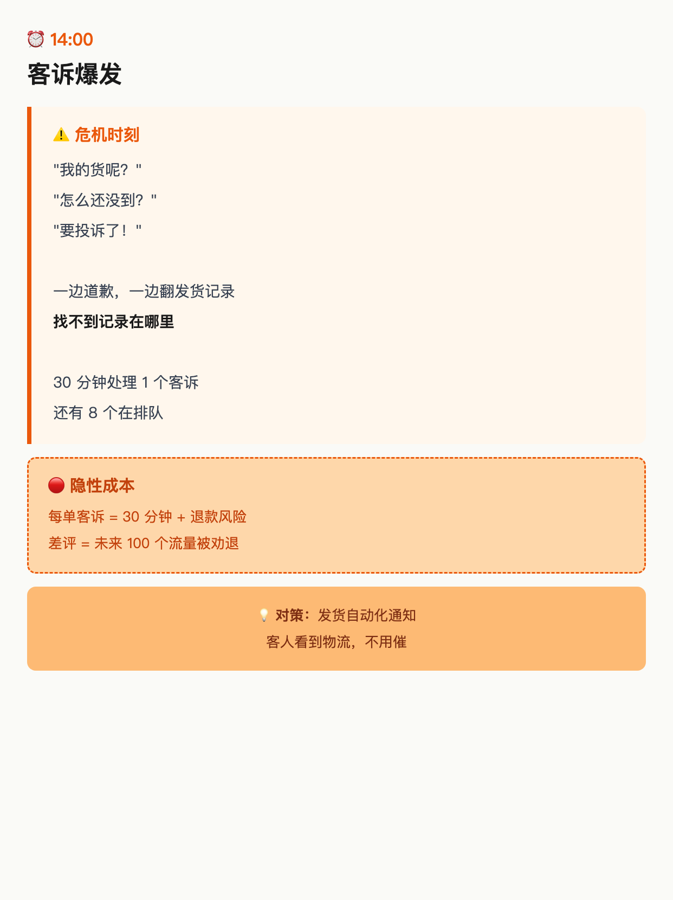
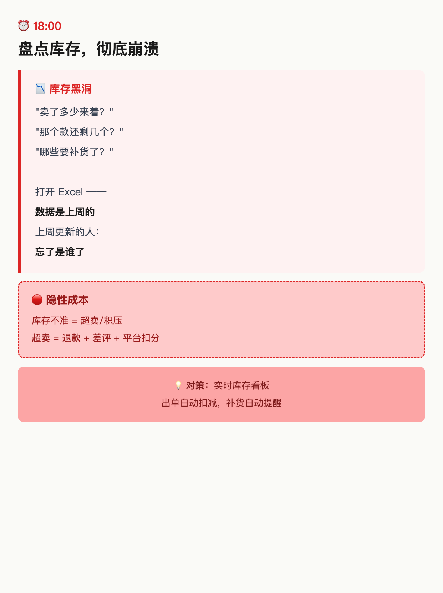
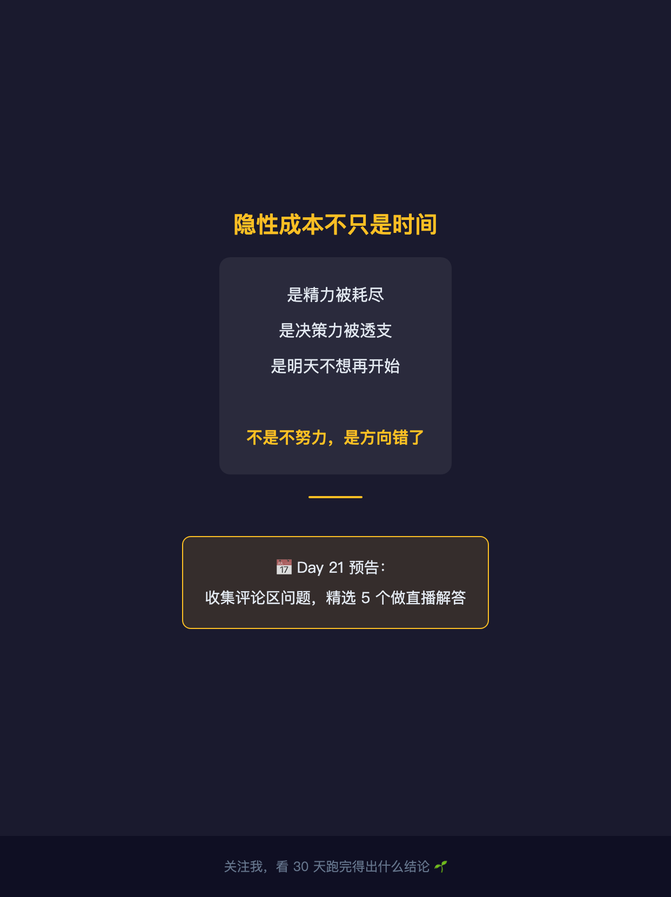

使用说明: 6 张图按顺序上传，标题「小电商的真实一天，看完别哭」（XHS 上限 20 字 ✓，16 字）。
配图通过 HTML+Chrome headless 截图 1242×1660 PNG 生成（中文 100% 清晰）。






小电商的真实一天，看完别哭
小电商的真实一天，看完别哭 ─── 09:00 ─── 微信 99+ "在吗？""这款有吗？""包邮吗？" 还没来得及回复， 又有人问："上次那个还能补货吗？" ─── 11:00 ─── 采购突然来消息："那款爆了，要等两周" 翻聊天记录——谁订了？订了多少？ 找不到，全靠脑子记 客户在催，你在找表 表找不到了 ─── 14:00 ─── 客诉爆发："我的货呢？""要投诉了！" 一边道歉，一边翻发货记录 30 分钟处理 1 个客诉 还有 8 个在排队 ─── 18:00 ─── 盘点库存，彻底崩溃 打开 Excel —— 数据是上周的 上周谁更新的？忘了 ─── 21:00 ─── 明天要发货的几个还没配好 今天的账还没对 明天的新品还没想好怎么写 ─── 隐性成本 ─── 不只是时间 是精力被耗尽 是决策力被透支 是明天不想再开始 不是不努力，是方向错了 ─── 评论区 ─── 你的一天也是这样吗？👇 评论区说出你的"忙乱时刻" 我选 5 个，下周直播解答 🌱 ─── Day 21 预告 ─── 收集评论区问题 精选 5 个做直播解答 关注我，看 30 天跑完得出什么结论 🌱
#前端转AI电商
#小电商
#电商日常
#忙乱的一天
#电商人共鸣
♡ 收藏
💬 评论
↗ 分享
📋 一键复制
📊 D20 数据复盘
内容定位: W3 证据与案例积累 · 情绪共鸣型 · 用时间轴还原真实一天
与 W3 整体的关系: D18（工作流观点）、D19（8个坑清单）之后，D20 用情感叙事接住——从理性到感性，节奏感
时间轴结构: 09:00→21:00，每段 = 1 个真实痛点 × 隐性成本 × 对策结尾 = 解决方案悬念
评论区互动设计: 「你的忙乱时刻」→ 低门槛叙事 → D21 直播预告钩子 → 高评论率
🚀 发布前 15 分钟 SOP
- 打开小红书 App → 创建笔记
- 选 6 张图（封面 1 + 内页 5），按顺序排好
- 选 3:4 竖图
- 标题：小电商的真实一天，看完别哭（XHS 上限 20 字 ✓，16 字）
- 正文：点「复制正文」按钮粘贴
- 加 5 个标签
- 选发布时间：周日 20:00-21:00（W3 收官前）
- 发布
📈 发布后 24 小时 SOP
| 时间 | 动作 | 目标 |
|---|---|---|
| 10 分钟 | 自己评论（「你的忙乱时刻是几点？评论区说说」） | 激活评论区叙事 |
| 30 分钟 | 每条评论认真回复（尤其分享忙乱时刻的，追问细节） | 收集 D21 直播问题 |
| 2 小时 | 截图保存 D20 数据 | W3 素材 |
| 6 小时 | 看一次数据（曝光/收藏/评论） | 判断是否二次推 |
| 24 小时 | 统计评论里「忙乱时刻」类型，准备 D21 | D21 直播问题收集 |
🎯 Day 20 数据目标
| 指标 | 目标 | 备注 |
|---|---|---|
| 曝光 | ≥ 2000 | 情绪共鸣帖天然高曝光 |
| 收藏率 | ≥ 8% | 故事帖收藏率中等，目标是评论 |
| 评论 | ≥ 100 | 「忙乱时刻」问题型互动强 |
| 涨粉 | ≥ 100 | W3 收官冲刺 |
💡 关键设计点
1. 标题 = 身份 + 情感 + 反问
- 「小电商的真实一天」 = 身份锚定（目标用户立刻进来）
- 「看完别哭」 = 情感钩子（好奇心 + 同理心）
- 字数 16 字，XHS 上限 20 ✓
2. 正文 = 时间轴 + 真实场景 + 隐性成本
- 09:00-21:00 时间轴（5 个时间节点，每段一个真实痛点）
- 隐性成本收尾（精力/决策力/明天不想开始）
- 评论区互动（「你的忙乱时刻」）
- Day 21 预告（收集问题 → 直播解答）
3. 配图结构
- 图 01 = 封面（暗色 + 「看完别哭」情感钩子）
- 图 02 = 09:00 微信 99+
- 图 03 = 11:00 采购危机
- 图 04 = 14:00 客诉爆发
- 图 05 = 18:00 库存崩溃
- 图 06 = 结尾（隐性成本 + Day 21 预告）
4. 情绪节奏
- D18 = 理性观点（工具 vs 工作流）→ D19 = 理性清单（8个坑）→ D20 = 感性叙事（一天还原）
- W3 结尾：D20 情感收 → D21 互动收 → D22 调研收
⚠️ 注意事项
- 正文 ≤ 1000 字—— XHS 上限 1000，本版约 820 字，留 buffer
- 配图沿用 HTML+Chrome headless—— 中文 100% 清晰，6 张全部生成
- 情绪共鸣型不追数据目标，追评论率——「忙乱时刻」问题型评论是关键指标
- Day 21 预告要有—— 把评论引导到直播问题收集，形成系列
- 发布时间建议周日 20:00—— W3 收官前，天然高互动